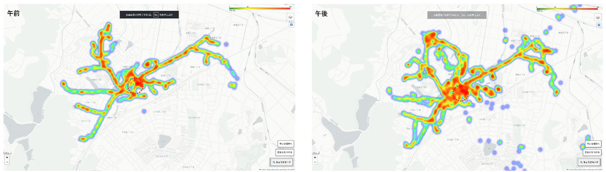
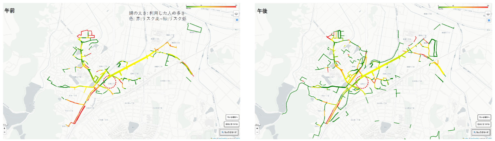
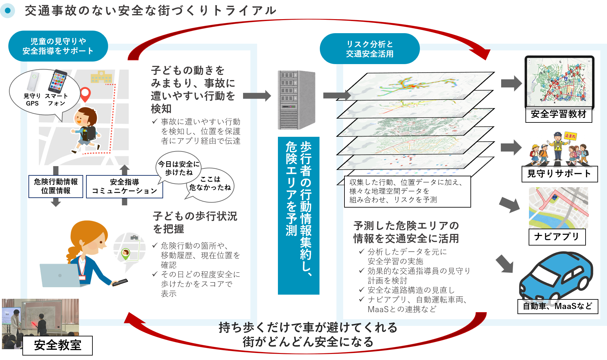

みまもりGPSを使った児童の通学実態調査
こどもの通学時に危険な行動が起こりやすい場所は？
千葉県八街市での交通事故をきっかけとして、子どもの安全を守る対策は強化されておりますが、通学路における安全を脅かす交通事故はいまだ後を絶ちません。事故発生にもとづいた事後対策ではなく、事故リスクの高い路線・交差点を見極め、道路整備と安全教育の両面から子どもの安全対策を進めることが必要です。そのため、子どもの通学時の利用経路を把握し、どのような場所で滞留したり、危険行動を行っているのかを把握する必要があります。
こどもの危険行動をどうやって把握するのか？
普段からみまもりGPSを携帯しているこどもたちも少なくないと思います。みまもりGPSを使えば保護者はこどもの位置を把握したり、防犯ブザーが押されたことを把握することができます。しかし、その位置情報を学校など、保護者以外の人が知ることはできません。それに、たとえ保護者であっても、こどもが1人でいるのか、友達と一緒にいるのかといったことも把握することはできません。
最近は携帯電話のGPS情報を使った「人流ビッグデータ」によって、いつどのような場所に多くの人が滞留しているかを把握することは可能ですが、残念ながら15歳未満のこどもの位置情報は提供されていません。そのため、こども達が通学時にどのような道を通っているのか、どこで滞留しているのかを知るためには、位置情報の提供を前提とする調査用のみまもりGPSを身に付けて、こどもたちに通学してもらう必要があります。
また、GPS情報だけではこどもたちが歩いているのか走っているのか、滞留しているのかといった違いを把握することは困難です。そこで、加速度センサーを搭載したみまもりGPSを使うことによって、加速度センサーでこどもの動きを検知し、危険行動を行っているかどうかを知ることができます。
みまもりGPS＋加速度センサーを使って通学の実態を把握する
福岡県宗像市のA小学校の児童33名（2年生と5年生）を対象に、2026年2月に、加速度センサーを搭載したみまもりGPSを使った実態調査を行いました。調査に使用したのは、ソニーネットワークコミュニケーションズ社の「APAS Platform」です。
実態調査では、通学時にみまもりGPSを持ち歩いてもらいました。希望者は下校後の活動や土日にも身に付けて行動してもらいました。また、こどもの位置情報や危険行動を保護者のスマートフォンでリアルタイムに確認することができるアプリを提供しました。
学校から500m圏内で危険行動がみられました
実態調査の結果から、学校からのネットワーク距離と危険行動割合の間には負の相関関係が存在することがわかりました。1.5kmを超える遠距離エリア（7.18%）と比較し、500m圏内ではリスク水準が 23.47% 〜 28.62% へ急増します。また､児童の高リスク行動が多かった道路の 49.25%（リスク比率）が、住宅街の生活道路に集中していることがわかりました。また高リスク行動の多い道路は、低リスク道路に比べて道路幅が細く交差点が連続している特徴がみられました。


さらに､信号付き横断歩道での危険行動割合は 21.23% であるのに対し、信号なし横断歩道では 14.08% と、信号付き横断歩道の方が危険行動が多く見られる結果となりました。
次に，飛び出しやふらつき等の危険行動率が0%の児童が 13.35%、危険行動率10%以下のほとんど危険行動をしない児童が 32.68% と､通学路において半数近くの児童は安全に歩行していることがわかりました。一方で、危険行動率が30%を超える「ハイリスク児童」は全体の 19.45%でした。
実践への示唆：通学路での危険行動を減らすために
信号なし横断歩道に比べて、より安全であるべき信号付き横断歩道の方が、危険行動が多く見られるという一見矛盾した結果となりました。これは､遠くの信号が青になった時や、横断中に青点滅になった時に、「早く渡ろう」と駆け足になっている可能性が推測されます。こどもに対して、信号ではあわてず次の青を待って横断するよう指導することに加えて、ドライバーに対して信号付き横断歩道であってもこどもが飛び出すリスクがあることを認知してもらうことも大切です。
通学路での危険行動を減らすためには、今回のような調査を行い、事故リスクの高い路線・交差点を見極め、道路整備と安全教育の両面から子どもの安全対策を進めることが必要です。

※イラスト出典：ソニーネットワークコミュニケーションズ